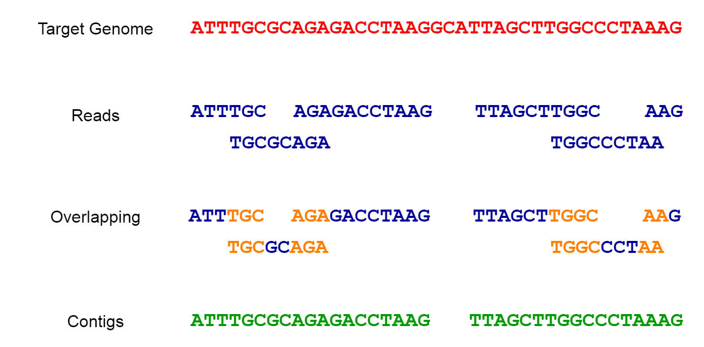

9 SNP Calling and Genome Assembly
9.1 SNP Calling
SNP calling (Single Nucleotide Polymorphism calling) is a process in genomics used to identify single nucleotide variants between sequences. These are the most common type of genetic variation among people, plants, animals, and other organisms. SNPs represent a difference in a single nucleotide (A, T, C, or G) in the DNA sequence among individuals or between a sample and a reference genome.
For SNP calling we can use freebayes or samtools.
We can call SNPs from read alignments - why not reuse the ones from previous section (i.e. Alignments_sorted.bam)?
9.1.1 Indexing the sorted alignment
cd myresults
samtools index Alignments_sorted.bam9.1.2 freebayes SNP calling
freebayes --fasta-reference najas.fasta -v UNFILTERED_RESULTS.vcf Alignments_sorted.bam
vcftools --vcf UNFILTERED_RESULTS.vcf --recode --out freeB_SNPs --minQ 15 --minDP 10
9.1.3 bcftools SNP calling
bcftools mpileup -f najas.fasta Alignments_sorted.bam | bcftools call -mv -Ov -o bcftools_calls.vcf
vcftools --vcf bcftools_calls.vcf --recode --out bcftools_filtered_callsSNPs --minQ 15 --minDP 10
9.1.4 And compare the results!
bedtools intersect -a bcftools_filtered_callsSNPs.recode.vcf -b freeB_SNPs.recode.vcf | wc -l9.2 Genome Assembly
Genome assembly refers to the process of taking a large number of short DNA sequences and putting them back together to create a representation of the original chromosomes from which the DNA originated.

9.2.1 Why Fragment the Genome? Understanding the Need for Short Reads in Genome Assembly
Cutting the genome into short reads before sequencing is a necessity due to current technological limitations.
Sequencer Capabilities: Most high-throughput sequencing technologies, such as Illumina, PacBio, and Oxford Nanopore, have physical and technical limitations on the length of DNA they can accurately read. Short-read technologies like Illumina can only sequence fragments up to a few hundred base pairs long, while long-read technologies like PacBio and Oxford Nanopore can read longer fragments (thousands to tens of thousands of base pairs), but still not entire chromosomes or genomes in one go.
Accuracy and Error Rates: Sequencing shorter fragments tends to produce more accurate and reliable data. Long reads often have higher error rates, which can complicate the assembly process. Combining short, accurate reads with long reads can improve the overall quality of the genome assembly.
9.2.2 Types of Genome Assembly
Reference-based Assembly:
- This method uses an existing reference genome from a related organism as a template to guide the assembly of the new genome. It aligns the short DNA reads to the reference genome and fills in the gaps.
Advantages:Faster and less computationally intensive, as it relies on the structure and sequence of the reference genome.Disadvantages:May not accurately assemble regions that differ significantly from the reference genome, potentially missing novel sequences or structural variations.
De-novo Genome Assembly:
- This method assembles the genome from scratch, without the use of a reference genome. It involves overlapping short reads to form longer contiguous sequences (contigs) and then ordering and orienting these contigs to create scaffolds representing the complete genome.
Advantages:Capable of revealing novel sequences, structural variations, and accurately assembling genomes of organisms with no close reference.Disadvantages:Computationally intensive and requires higher coverage (more reads) to ensure accuracy and completeness.
9.3 De-novo assembly of chloroplast genome
We want to assemble our reads to get a new chloroplast genome assembly we’ll use the reads that aligned to the reference to save some time.
9.3.1 Preparing the reads (fastq files)
Remove ‘unmapped’ reads
samtools view -h -F 4 Alignments_sorted.bamperforms the following operation using samtools:
view: This is asamtoolscommand used to view or extract alignments from a SAM or BAM file.-h: The-hoption specifies that the output should include the SAM header information. It means that the header lines, which provide metadata about the SAM/BAM file, will be included in the output.-F 4: The-Foption is used to exclude specific flag values from the output. In this case,-F 4indicates that reads with the “unmapped” flag (bit 3) will be excluded from the output. This means that only mapped reads will be included in the output.Alignments_sorted.bam: This is the input BAM file from which the reads will be extracted. The path and file name of the BAM file are provided as the last argument.
Overall, the command will extract mapped reads from the Alignments_sorted.bam BAM file and display them in SAM format, including the header information. The output will exclude any reads that are marked as “unmapped” in the BAM file.
Create paired-end FASTQ files from the sam/bam file
samtools fastq input.sam -1 First.fastq -2 Second.fastq
performs the following operation using samtools:
fastq: This is asamtoolscommand used to convert a SAM/BAM file to FASTQ format, which is a standard format for storing sequencing reads and their quality scores.input.sam: This is the input SAM file that you want to convert to FASTQ format. Replaceinput.samwith the path and filename of the actual SAM file you want to convert.-1 First.fastq: The-1option specifies the output file for the first mates (R1) of paired-end reads. The converted FASTQ data for the first mates will be saved in a file namedFirst.fastq. ReplaceFirst.fastqwith the desired filename.-2 Second.fastq: The-2option specifies the output file for the second mates (R2) of paired-end reads. The converted FASTQ data for the second mates will be saved in a file namedSecond.fastq. ReplaceSecond.fastqwith the desired filename.
Overall, the command will convert the alignments in the input.sam SAM file to paired-end FASTQ files (First.fastq and Second.fastq), allowing you to work with the sequencing reads in a standard and widely used format for downstream analysis, such as read mapping, variant calling, or quality assessment. Note that if your input file is in BAM format instead of SAM, you can use the same samtools fastq command, and samtools will automatically handle the conversion from BAM to FASTQ.
To get ALL aligning reads:
cd myresults/
samtools view -h -F 4 Alignments_sorted.bam | samtools fastq -1 first.fastq -2 second.fastq
ls -lhTo get only reads aligning in proper pairs:
cd myresults/
samtools view -h -f 3 Alignments_sorted.bam | samtools fastq -1 first.fastq -2 second.fastq
ls -lhNow you have paired-end properly aligned FASTQ files first.fastq and second.fastq which are redy for assembly. We will use two de-novo assembler: Velvet and SPAdes to do the assembly and compare the results.
9.4 Velvet de-novo genome assembly
https://github.com/dzerbino/velvet
setting up a Velvet assembly using velveth
velveth program, is part of the Velvet de novo genome assembly software.
The following command is for setting up a Velvet assembly(to create the hash table for the Velvet assembler) with the specified k-mer size (29 in this case, you can try a random one 21 - 141 so we can compare) using paired-end short read data provided in separate FASTQ files (first.fastq and second.fastq).
velveth kmer29_velvet_Assembly 29 -shortPaired -fastq -separate first.fastq second.fastqLet’s break down the components of the command:
velveth: This is the command to invoke thevelvethprogram for setting up the Velvet assembly.kmer29_velvet_Assembly: This is the name of the output directory where the Velvet assembly files will be stored. The assembly will be created in a folder namedkmer29_velvet_Assembly.29: This is the k-mer size parameter, which specifies the length of the overlapping subsequences used in the assembly process. In this case, the k-mer size is set to 29.-shortPaired: This option indicates that the input reads are in paired-end format.-fastq: This option specifies that the input files are in FASTQ format.-separate: This option indicates that the paired-end reads are provided in separate FASTQ files. The two input FASTQ files (first.fastqandsecond.fastq) contain the forward and reverse reads of the paired-end data.
The resulting assembly files will be stored in the kmer29_velvet_Assembly directory. The chosen k-mer size can significantly impact the quality and performance of the assembly process.
velvetg Assembly
The following command will do the gemome assembly using velvetg
velvetg kmer29_velvet_Assembly -clean yesThe command velvetg kmer29_velvet_Assembly -clean yes is used to run the Velvet genome assembler with specific options on an assembly created using a k-mer size of 29.
Explanation of the components:
velvetg: This is the command to run the Velvet genome assembler.kmer29_velvet_Assembly: This specifies the name of the assembly directory generated using a k-mer size of 29. It refers to the output directory where Velvet has previously stored the intermediate files and results of the assembly process.-clean yes: This is an option for Velvet that instructs the assembler to remove intermediate files generated during the assembly process. By specifying-clean yes, the command will clean up and delete these intermediate files once the assembly process is complete.
In summary, the command is running Velvet on an assembly that was previously created using a k-mer size of 29 and then cleaning up the intermediate files after the assembly is done.
9.4.1 Velvet output files
The main output of Velveth is a set of files that represent the input data in a format optimized for the subsequent assembly step performed by Velvetg. The most important output files are contigs.fa and stats.txt.
contigs.fa (or contigs.fasta): This file contains the assembled contigs generated by Velveth during the initial de novo assembly process. Contigs are contiguous sequences that represent overlapping subsequences (k-mers) of the input reads. Each contig represents a portion of the genome that Velveth was able to assemble based on the input sequencing data. The
contigs.fafile is in FASTA format, with each contig represented by a sequence header (name) and its corresponding nucleotide sequence.stats.txt: This file provides statistical information about the assembly process and the resulting contigs. The
stats.txtfile typically includes metrics such as the total number of contigs, the N50 length (a measure of assembly quality), the total assembly size, and various other statistics related to contig lengths and coverage. This information is essential for assessing the quality and completeness of the assembly.
9.5 SPAdes de novo genome assembly
https://github.com/ablab/spades SPAdes is a widely used bioinformatics software tool for performing de novo genome assembly from short-read sequencing data. The name “SPAdes” stands for “St. Petersburg Genome Assembler.” The following command will perform de novo assembly of paired-end short read data with a specified k-mer size of 29 using SPAdes.
spades.py -o kmer29_Spades_assembly -1 first.fastq -2 second.fastq -k 29Let’s break down the components of the command:
spades.py: This is the command to run the SPAdes genome assembler.-o kmer29_Spades_assembly: The-ooption specifies the output directory where the assembled contigs and related files will be stored. The directory namedkmer29_Spades_assemblywill be created to hold the assembly results.-1 first.fastq: The-1option indicates the input file containing the forward reads (R1) of the paired-end data, which is stored in thefirst.fastqfile.-2 second.fastq: The-2option indicates the input file containing the reverse reads (R2) of the paired-end data, which is stored in thesecond.fastqfile.-k 29: The-koption specifies the k-mer size used during the assembly. In this case, a k-mer size of 29 is used. The k-mer size determines the length of the overlapping subsequences used in the assembly process.
SPAdes is a widely used bioinformatics tool for de novo genome assembly from short-read sequencing data. It employs multiple algorithms to handle various aspects of the assembly process, including k-mer-based assembly and de Bruijn graph construction. The -k option allows users to specify different k-mer sizes to optimize the assembly based on the characteristics of the input data. The assembled contigs and scaffolds will be saved in the output directory specified with the -o option for further analysis and exploration.
9.5.1 SPAdes output files
SPAdes generates multiple output files as a result of the genome assembly process. These files contain valuable information about the assembled genome and related statistics. Below are the main output files typically produced by SPAdes:
contigs.fasta: This file contains the assembled contigs, which are contiguous sequences of the genome without gaps. Each contig represents a portion of the genome that SPAdes was able to assemble based on the input sequencing data.
scaffolds.fasta: The scaffolds file contains longer sequences, known as scaffolds, which are formed by connecting contigs using paired-end read information. Scaffolding helps to bridge gaps between contigs and creates more extended sequences.
contigs.paths: This file provides the contig paths in the de Bruijn graph used during the assembly process. It shows how the contigs were assembled and the order of overlapping k-mers.
scaffolds.paths: Similar to contigs.paths, this file provides the paths of scaffolds in the de Bruijn graph. It shows the order in which scaffolds were connected to form the final assembly.
assembly_graph.fastg: This file contains the assembly graph in FASTG format, which represents the relationships between contigs and scaffolds. It provides a graphical representation of how the genome was assembled.
before_rr.fasta: If the input data includes long reads (e.g., PacBio or Oxford Nanopore), this file contains contigs generated from these reads before the read error correction step.
corrected.fasta: If the input data includes long reads, this file contains corrected contigs after the read error correction step.
dataset.info: This file provides information about the input datasets used in the assembly, such as the number of reads, read length, and other statistics.
params.txt: This file contains the parameters and settings used in the SPAdes assembly.
spades.log: The log file records information about the assembly process, including warnings, errors, and resource usage.
Additionally, SPAdes generates various subdirectories within the output directory that contain intermediate files and data produced during the assembly process. These files are used internally by SPAdes and are essential for its assembly algorithm.
The specific set of output files and their contents may vary depending on the input data, the assembly options chosen, and the version of SPAdes used. The contigs.fasta and scaffolds.fasta files are typically the most important output files as they represent the final assembled sequences of the genome. We can use these output files for downstream analyses, such as gene prediction, functional annotation, and comparative genomics studies.
9.6 Stats using seqkit !
Now let’s look at stats using seqkit.
# stats for velvet assembly
seqkit stats -a kmer29_velvet_Assembly/contigs.fa
#stats for SPAdes assembly
seqkit stats -a kmer29_Spades_assembly/contigs.fastaperforms the following operation using the seqkit tool:
seqkit: This is the command to run theseqkittool, a bioinformatics utility for working with biological sequence data.stats: This is one of the functionalities provided byseqkit. Thestatssubcommand is used to generate various statistics for the sequences in the input file.-a: The-aoption specifies that the statistics should be calculated for each sequence in the input file (in this case,contigs.fasta) in addition to the overall statistics for the whole file.kmer29_Spades_assembly/contigs.fasta: This is the input file that contains the assembled contigs in FASTA format. The path and filename point to thecontigs.fastafile generated by the SPAdes assembly with k-mer size 29.
The output of the command will display various statistics for the sequences in the contigs.fasta file. These statistics commonly include:
Total Sequences: The total number of sequences (contigs) present in the input file.
Total Bases: The total number of nucleotide bases in all the sequences combined.
Minimum Length: The length of the shortest sequence (contig) in the file.
Maximum Length: The length of the longest sequence (contig) in the file.
Mean Length: The average length of all the sequences in the file.
N50 Length: A measure of assembly quality, which represents the length at which half of the total bases are found in sequences that are equal to or longer than this length. N50 is used as an indicator of the contiguity of the assembly.
GC Content: The percentage of G (guanine) and C (cytosine) nucleotides in all the sequences combined.
Sequence Composition: A summary of the number of sequences with specific GC content ranges (e.g., 20-30%, 30-40%, etc.).
These statistics are valuable for evaluating the quality of the genome assembly and for understanding the characteristics of the assembled contigs. A high N50 value indicates good contig contiguity, while the GC content provides insights into the nucleotide composition of the genome.
By analyzing the seqkit stats output, researchers can assess the performance of the assembly and determine the next steps in their genomic analysis, such as gene prediction, functional annotation, and comparative genomics.
9.7 Alignment using MUMmer
MUMmer (MUltiple MUMs for DNA Sequence) is a bioinformatics software package designed for the rapid alignment of large DNA sequences. It is particularly useful for aligning whole genomes and is capable of handling sequences ranging from small bacterial genomes to large eukaryotic genomes.
We will align our de-novo assembled genome against the reference genome we have (i.e. thalassia.fasta or najas.fasta). First,
Align our de-novo assembled genome against the reference genome
cd myresults
#teach-maker2
cp /mnt/s-ws/everyone/scie4002_refs/thalassia.fasta .
#teach-maker3
cp /mnt/s-ws/everyone/thalassia.fasta .
cd kmer29_Spades_assembly
nucmer ../thalassia.fasta contigs.fastaHere’s a breakdown of the components of the command:
nucmer: This is the command to run the NUCmer program.../thalassia.fasta: This is the path and filename of the first input FASTA file, which contains the reference genome or sequence. In this case, the reference sequence is stored in the filethalassia.fastalocated in the directorymyresults.contigs.fasta: This is the path and filename of the second input FASTA file, which contains the assembled contigs or sequences that you want to compare to the reference genome. In this case our de-novo assembled genome using SPAdes.
NUCmer performs whole-genome pairwise alignment by identifying maximal unique matches (MUMs) between the two input sequences. It then constructs an alignment between these MUMs to identify conserved regions and variations between the reference genome and the assembled contigs.
The output of the NUCmer program a file out.delta:
out.delta: This is the main output file containing the sequence alignment in delta format, which represents the location and size of the MUMs.
concatenate the contigs into a big fasta file using MUMmer. We could just concatenate our sequences, but that will result in an ugly output we can use MUMmer tools to order and orient our contigs MUMMER uses a reference sequence.
show-tiling -p Spades_concatenated_contigs.fasta out.delta nucmer ../thalassia.fasta Spades_concatenated_contigs.fasta
mummerplot -t png out.deltathere’ll be an error due to a bug, we can fix this though
grep -v mouse out.gp > out_fixed.gp
gnuplot out_fixed.gp